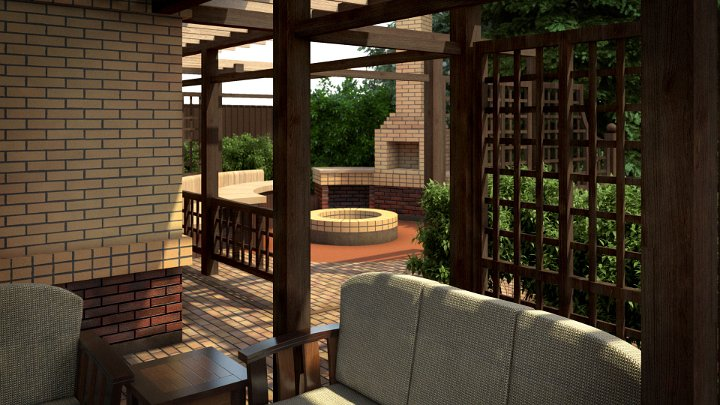

|
|

Мы встречаем места, где наблюдается очевидная гармония между всеми элементами природы – поверхностью земли, строениями и растительностью. Такие места обладают естественно возникшим гармоническим ландшафтным характером. Ландшафтный характер практически любого участка может быть развит или усилен путем исключения отрицательных элементов и акцентирования его положительных качеств. Для разумного улучшения ландшафта мы должны понимать сущность его природного характера и иметь знания развить эту сущность.
Для проектирования необходим четкий масштабный план участка. Как правило, все планы предоставляемые заказчиком имеют расхождение с натурой и требуют перепроверки. Лучше всего самому произвести измерения и это полезно. Знакомство с участком помогает выявить места, на которые следует обратить внимание (старые фундаменты, мощеные дорожки, скальные выходы наружу, выходы грунтовых вод, пни старых деревьев и многое другое). При обмерах нужно зафиксировать местоположение и размеры дома, границы участка, существующую растительность, дорожно-тропиночную сеть и т.д. Расположение всех постоянных компонентов должно быть замерено и нанесено на масштабный план.
Обыкновенно бывает необходимо произвести топографическую съемку участка. Мы практикуем пятиметровую сетку съемки, наносим отметки фундаментов зданий и заборов, колодцев, площадок и прочее в соответствии с необходимостью. В топографических планах, вычерчиваемых на основе топосъемки, наносим линии горизонталей рельефа, обозначающие относительную высоту над принятым уровнем. Как правило, мы используем шаг горизонталей не более 10 см.
На объектах со сложным рельефом возрастает необходимость в топографических планах. На их основе держится бόльшая часть проекта по причине возрастающей сметной стоимости строительства площадок, лестниц, подпорных стенок и перемещении дополнительных объемов земляных масс.
Ландшафтный дизайн в Сочи имеет ряд особенностей. В условиях преобладания сложного рельефа, помимо топографических планов мы ввели в практику построение объемной 3D-модели существующего рельефа, на которой располагаем существующие и проектируемые объемные элементы (дом, сад и т.д.). На базе 3D-модели рельефа проводится анализ.
К работам подготовительного периода относятся:
- анкета заказчика – своеобразное техническое задание, которое составляется совместно;
- эскизный план обследования участка, на котором все начальные данные об особенностях участка сводятся вместе на одной схеме;
- анализ участка – записи о состоянии участка и предложения по его улучшению. Это фактическая оценка всего, что есть на участке от состояния строений до климатических условий, преимущества и недостатки почвы, определение pH, коммуникации, дренаж и т.п.
Обследование и анализ участка – самые важные шаги в разработке ландшафтного дизайна.
Процесс проектирования является не более чем процедурой повторного анализа всей собранной информации, логического развития и уточнения деталей – это процесс созидательного синтеза.
Хороший проект является не более чем фиксацией логических мыслей.
Скучный проект – это фиксация неудачного мышления или вообще чрезвычайно ограниченного мышления.
Блестящий проект свидетельствует об уверенном анализе всех факторов участка и сооружений, о ясном понимании их взаимоотношений и о тонко прочувствованном выражении функций всего участка, объединенных таким образом, что одно дополняет другое и все вместе работает гармонично.
Графическое изложение своих идей (умение выразить их на бумаге) – основа работы в ландшафтном дизайне. Это объединяет идеи, их реализацию и все имеющиеся данные – необходимость сконцентрировать и зафиксировать свои идеи.
Как фантазии перенести в реальный сад? Как представить проект в виде трехмерных объектов, например, тропинок или уступов в пространстве, созданном воображением?
Объемные воплощения замыслов нужно соотнести с условиями освещения. Пространство имеет свои характеристики и настроение. Замкнутое пространство – для уединенного сада, просматриваемое – вызывает чувство незащищенности. Взаимодействие между массами и пустотами создает структуру сада. Преобладание пустоты создает простор и открытость.
Пространство может быть: статичным, динамичным, прямолинейным, защищенным, завихряющимся.
Пропорции. Внутри здания архитекторы создают жизненное и рабочее пространства, и основой их масштаба становится рост и пропорции человека. Снаружи, где пространство ограничено небом, пропорции внутренних помещений кажутся жалкими и неуютными. На открытом пространстве ландшафтный дизайнер должен соотносить масштаб человеческой фигуры с безмерным пространством между небом и горизонтом. Чтобы уравновесить линию горизонта, в саду должны доминировать вертикали деревьев и сооружений. Сад – это ведь и место отдыха. И пропорции здесь не должны сковывать. На территории сада ступени, дорожки, проемы должны быть больше, чем внутри здания.
Как бы то ни было, сад должен иметь связь с ростом и пропорциями человека, а также с пространством как составной частью ландшафтного дизайна. Дорожки, лестницы, беседки, зоны отдыха должны быть просторными, удобными и уютными, а не безграничными и пустыми. Настоящей основой сада являются правильные пропорции. Внутри дома люди чувствуют себя комфортно сидя вплотную друг к другу. В саду такую же площадь надо расширить вдвое, чтобы не чувствовать стеснения. Лестницы следует делать просторными с большими площадками.
Поверхность участка. Как изменить невыразительный внешний вид сада введением в дизайн вертикальных и возвышающихся элементов? Придать объемный вид саду помогают: ступени, ограды, строения, беседки, арки, перголы, статуи, вазоны, скамьи, деревья и отдельно растущие кустарники. Вертикальные элементы наиболее значимы в любом саду.
При входе в незнакомый сад взгляд моментально находит сильный вертикальный элемент и концентрируется на нем, привыкая к новой окружающей среде. Без центра внимания взгляд будет блуждать, и пейзаж как будто бы утратит внутренний смысл. Вертикальные элементы необходимы, так как они объединяют разнородные черты дизайна. Высота вертикальных элементов влияет на то, что будет видно с разных точек сада, обеспечивается ли хороший обзор или образуются помехи, и хорошо ли обозревается панорама за границей участка.
Вертикальные элементы могут объединить дом с окружающим ландшафтом, повторяя очертания окрестных построек или холмов.
Для того чтобы сад представлял собой единое целое, посадки нужно делать в соответствии с жесткой ландшафтной архитектурой. Сад также с помощью растений можно связать с окружающим ландшафтом.
Работа с бόльшими пространствами, чем объемы интерьеров сопряжена с проектированием гораздо более сложных структур с большим количеством деталей, перспективой, композициями многостороннего или кругового обзора, наличием заимствованных видов (экстравертные сады). Все это требует демонстрации заказчику в виде объемно проработанных эскизов, понятных, правдоподобных, а еще лучше сказать реалистичных. Умение выразить свои идеи в понятном виде – основа работы в ландшафтном дизайне. Недостаточно уметь разработать проектную идею, важно ее довести до понимания заказчика, раскрыть максимально закладываемый смысл и здесь любые средства выражения уместны. Наиболее совершенной на наш взгляд является 3D-моделирование объемных изображений проектируемых объектов. Компьютерная графика позволяет создавать почти реалистичные картины, используя глобальное освещение, перспективу, как линейную, так и воздушную, вплоть до создания ощущения ветра, состояния времени суток, будь то раннее туманное утро или вечерние сумерки с уже включенной иллюминацией и декоративной садовой подсветкой.
Важно то, что 3D-модель опирается на масштабный план. При построении учитываются пропорции в увязке с ростом человека. Если даже автор проекта не задействован в процессе строительства объекта (осуществляет лишь общее авторское руководство в объеме консультаций) или строительству отдельных элементов привлечены субподрядные организации, наличие качественных 3D-эскизов позволяет получить полное объемное представление о том, как должен будет выглядеть объект к окончанию строительства. Лучше один раз увидеть, чем десять раз услышать.
Построение объемных чертежей основывается также на плане посадок. Возможно самая значительная роль, которую растения играют в саду, это их привлекательный вид. В результате удачного размещения посадок получаются красивые композиции по форме, структуре и оттенкам. Именно в процессе «объемного» проектирования (моделирования) обнаруживается огромное количество пропущенных деталей. В результате появляется возможность заполнить недочеты.
В 3D-проектировании используется библиотека моделей растений, которая кропотливо создается и накапливается годами. В нашей библиотеке накоплено около 200 базовых моделей растений созданных нами, и с каждым новым проектом возникает необходимость создания новых моделей.
Дендрологический раздел проектирования в Сочи – наиболее сложная часть проектирования по сравнению с любыми другими регионами страны. В данной местности огромное количество культивируемых растений представляющих декоративный интерес и рекомендованных для садово-паркового строительства. Тем более ландшафтный дизайн в Сочи призван к построению исключительно колоритных, неповторяющихся по своей оригинальности и уникальных, в дендрологическом плане, объектов. Количество экзотических интродуцентов поражает и завораживает. Очень важно при подборе растений соотношение их особенностей произрастания с условиями проектируемого объекта: почвы, дренаж, грунтовые воды, высота над уровнем моря, влажность, режим инсоляции, совместимость, цвет, форма, структура и т.д.
Инсоляция территории проектируемого объекта – важная стадия проектирования – позволяет правильно распределить растения в саду в зависимости от их отношения к прямому солнечному свету, поскольку растения бывают светолюбивыми и теневыносливыми.
Дизайн сада – это четкая планировка и создание форм на его пространстве, и в этом отношении он тесно связан с архитектурой. Он включает в себя множество элементов: обследование территории, изучение почвы, выбор растений для посадки, оформление сада, освещение. Ландшафтный дизайн считается одной из сложных форм искусства, потому что требует разнообразных подходов для своего воплощения в жизнь.
Ландшафтный (садовый) дизайн – это вид искусства. Как в живописи или в музыке, здесь существуют общие принципы. Самый главный инструмент для постижения любого вида искусства – это глаза, но зачастую мы смотрим, но не видим. Как можно научить кого-то рисовать, также ландшафтный дизайнер в процессе всей жизни обучается искусству создавать прекрасные сады.
Список использованной литературы:
- Александер Розмари. Настольная книга садового дизайнера / Пер. с англ. — М.: БММ АО, 2006. — 292 с.: ил.
- Джон Ормсби Саймондс. Ландшафт и архитектура / Пер. с англ. А. И. Маньшавина, науч. ред. Л. С. Залесская, Е. М. Микулина, изд. Государственное издательство литературы по строительству и архитектуре, 1965
- Говорова Т. Б. Основные мероприятия инженерной подготовки. Изд. Научно-образовательный центр «Ипсилон».
|